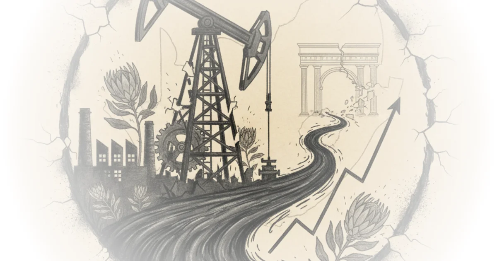
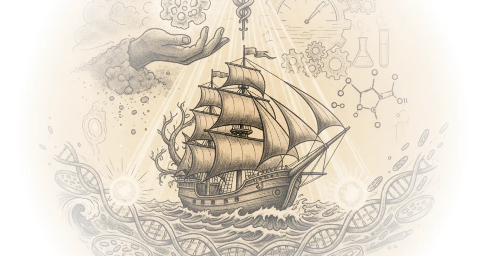
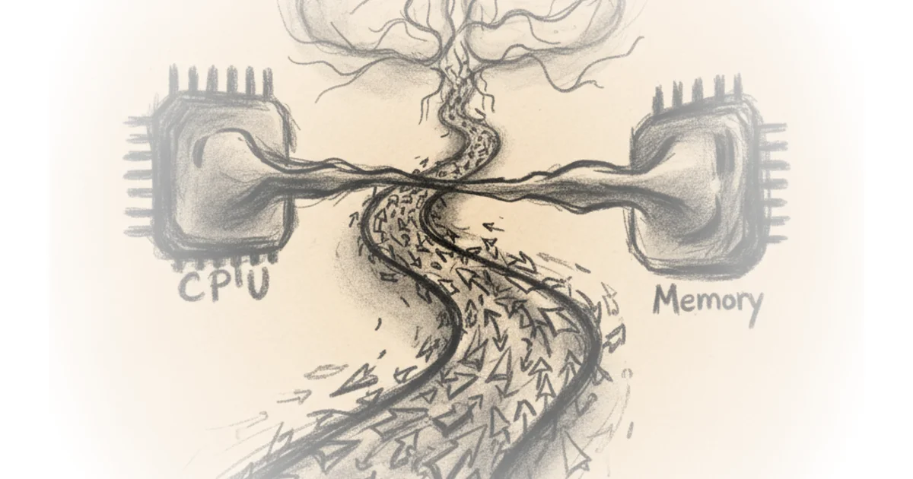

From Fiber to AI: A Laser Giant’s Rebirth Asianometry · Asianometry ·Mar 15, 2026 · 21 min read · AI & Tech
Chip Fabs in Space: Technically Possible, Completely Impractical Asianometry · Asianometry ·Feb 22, 2026 · 18 min read · Science
South Africa's Ruined Synthetic Oil Giant Asianometry · Asianometry ·Feb 16, 2026 · 24 min read · Science 
The Epochal Ultra-Supercritical Steam Turbine Asianometry · Asianometry ·Feb 12, 2026 · 15 min read · Economics
The Great Golden Age of Antibiotics Asianometry · Asianometry ·Feb 9, 2026 · 14 min read · Science 
Silicon Valley Thinks TSMC is Braking the AI Boom Asianometry · Asianometry ·Feb 1, 2026 · 15 min read · AI & Tech
The Japanese AI Boom Needs A Little More Ambition Asianometry · Asianometry ·Jan 29, 2026 · 14 min read · AI & Tech
Ternary Computing: Theoretically Better than Binary Asianometry · Asianometry ·Dec 18, 2025 · 14 min read
Can Superconductors Put an AI Data Center into a Shoebox? Asianometry · Asianometry ·Nov 23, 2025 · 17 min read
How Indonesian Instant Noodles Became a Nigerian Sensation Asianometry · Asianometry ·Feb 16, 2025 · 16 min read
An Interview with Stratechery; A New Start Jon Y · Asianometry ·Jan 20, 2025 · 53 min read · Economics
Why Brain-like Computers Are Hard Jon Y · Asianometry ·Apr 29, 2024 · 14 min read · AI & Tech 